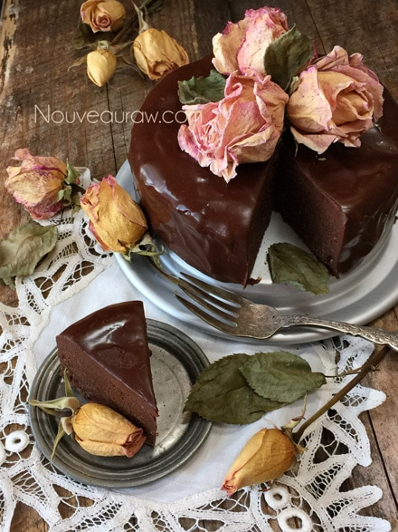
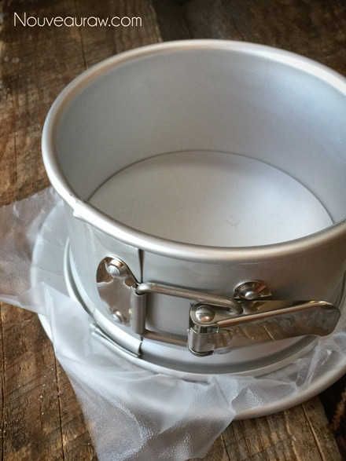
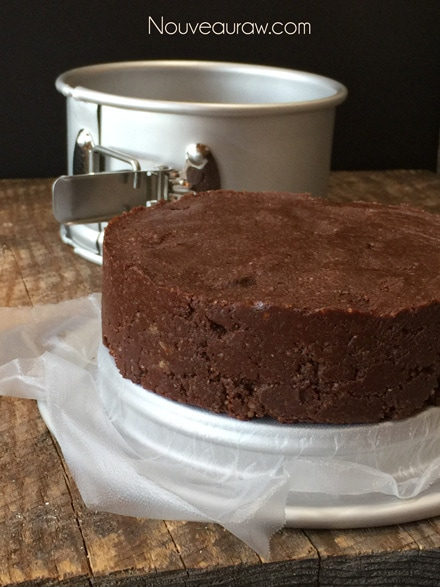
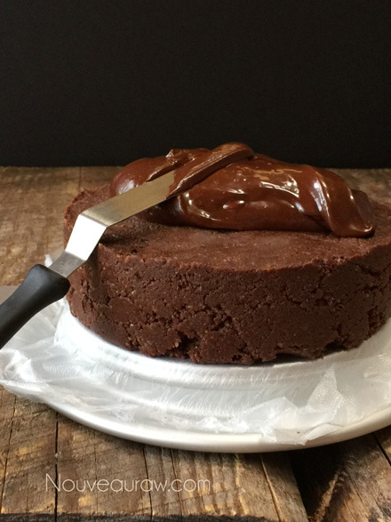
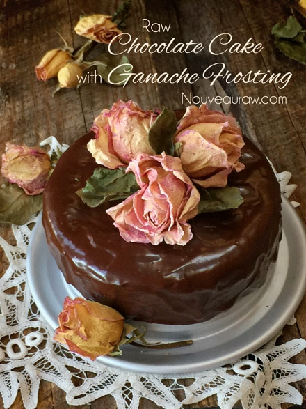
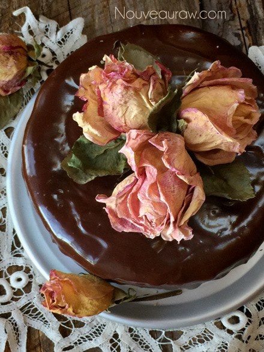

Flourless Chocolate Cake with Ganache Frosting

~ raw, vegan, gluten-free ~
Formally known as, Raw Chocolate Cake with Ganache Frosting. I originally posted this recipe November 23rd, 2010. Oftentimes, recipes get pushed down (by the latest and greatest recipes) and therefore, get lost in the shuffle. This is really a shame because regardless of their “age,” they are still wonderful recipes.
I love it when Nouveau Raw visitors ask me questions and make comments when they try recipes. It gives me a chance to revisit them myself. And that is when I notice my “early day” photography. *shudders* hehe I am not a professional photographer by any means, but when I look back to my first post releases, I can see such a huge difference in my photos. So, I felt it was time to give this recipe a makeover. With that said, if things look a little different, that is why. But don’t worry, I didn’t change the ingredients, the recipe remains the same.
So, on to the cake, which is super-duper easy to make. In fact, it took longer to do the dishes than it did to make the cake! If you are new to raw or at least new to dabbling with making raw desserts… you should know that raw cakes are not light and fluffy like baked cakes. They are dense, thick, rich and a little piece goes a long way.
When I serve raw desserts, I dish up small pieces. Most people will have a look of disappointment on their face and say something like, “Really, that’s all I get?” To that I reply, “Trust me, it is rich, and should you want more, you are more than welcome to it.” Nine times out of ten, they walk away totally happy and satisfied with what they were served. This prevents waste and belly aches from eating too much. Eyes are always bigger than the tummy, and we have become conditioned to eat large quantities of food.
Not only is this cake delicious, but it is also an excellent blank canvas just waiting for your creative touch. Below, I shared a few ideas on how to decorate the cake, but the sky is the limit. For this particular cake, I used a 6″ Springform pan. So the cake was 6″ in diameter and 1 3/4″ high. Enjoy and have fun in the kitchen.
Yields 6 x 3″ cake
Chocolate Ganache: yields 1 cup
- 3/4 cup maple syrup
- 3/4 cup raw cacao powder
- 1/3 cup virgin coconut oil, melted
- 1/8 tsp Himalayan pink salt
Cake:
- 3 cups raw walnuts, soaked & dehydrated
- 1/8 tsp Himalayan pink salt
- 2/3 cup raw cacao powder
- 1 1/2 cups (16 large) Medjool dates, pitted
- 1/3 cup chocolate ganache
- 2 tsp water
- 1 tsp vanilla extract
Topping ideas:
- Unsweetened shredded dried coconut
- Fresh berries
- Dried or fresh edible flowers
- Crushed nuts
- Dust with cacao powder
Preparation:
Ganache:
- We will start by making the ganache first since we need 1/3 of a cup for the cake batter. The remaining ganache will be used for frosting the cake.
- In a high-powered blender, combine the maple syrup, cacao, oil, and salt. Process until smooth.
- If needed, occasionally stopping to scrape down the sides of the blender jar with a rubber spatula. Set aside.

Cake:
- Place the walnuts and salt in a food processor fitted with the S-blade process until finely ground.
- Be careful that you don’t over-process the walnuts or they will get too oily.
- Add the cacao powder and pulse until the cacao is well mixed.
- Sprinkle the dates around the bowl of the food processor, add 1/3 cup ganache, water, and vanilla. Process until the mixture begins to stick together.
- Again, I can’t stress enough to not over-process the batter. Walnuts are high in oil, and when overworked they can release too much of their natural oils.
- Line a 6″ cake pan with parchment paper or plastic wrap.
- I like to use a springform pan for my cake but isn’t required.
- Transfer the chocolate cake batter into the pan and distribute it evenly.
- Press down with your hand to compact.
- If the cake batter is sticking to your hands, lightly dampen them.
To Serve:
- Run a knife around the edge of the pan to loosen the cake. Or if using a springform pan, remove the outer ring.
- Place a serving plate upside-down on top of the cake pan.
- Invert, then lift the pan off.
- Remove the parchment round.
- Using a small offset spatula, frost with the remaining chocolate ganache.
- Allow some of the ganache to drizzle down the sides of the cake if you like that look.
- Chill in the refrigerator for at least 30 minutes before serving.
- Be creative when decorating your cake. It’s a beautiful blank canvas just waiting for your special touch!




